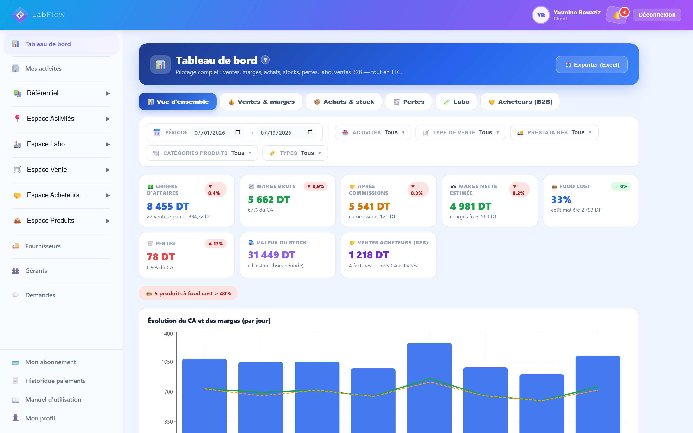
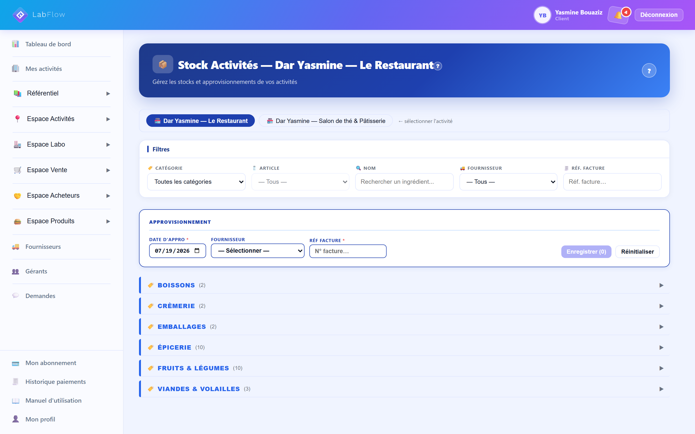
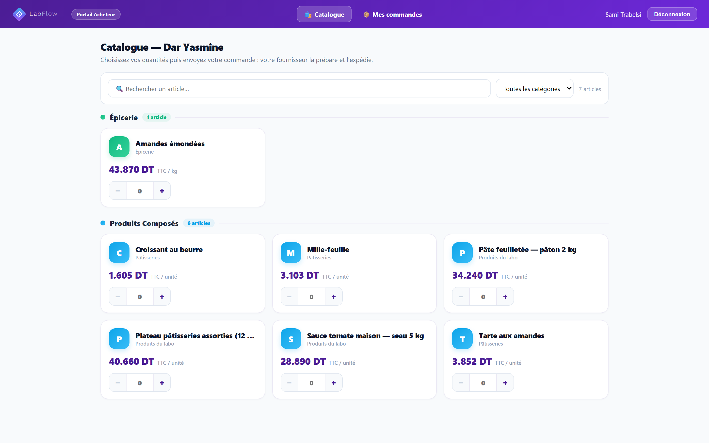
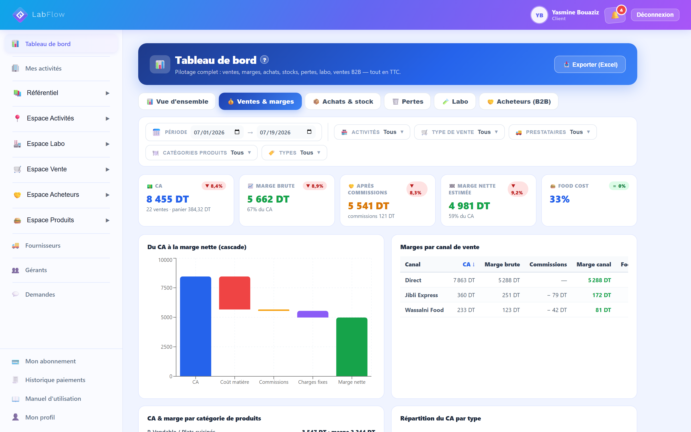
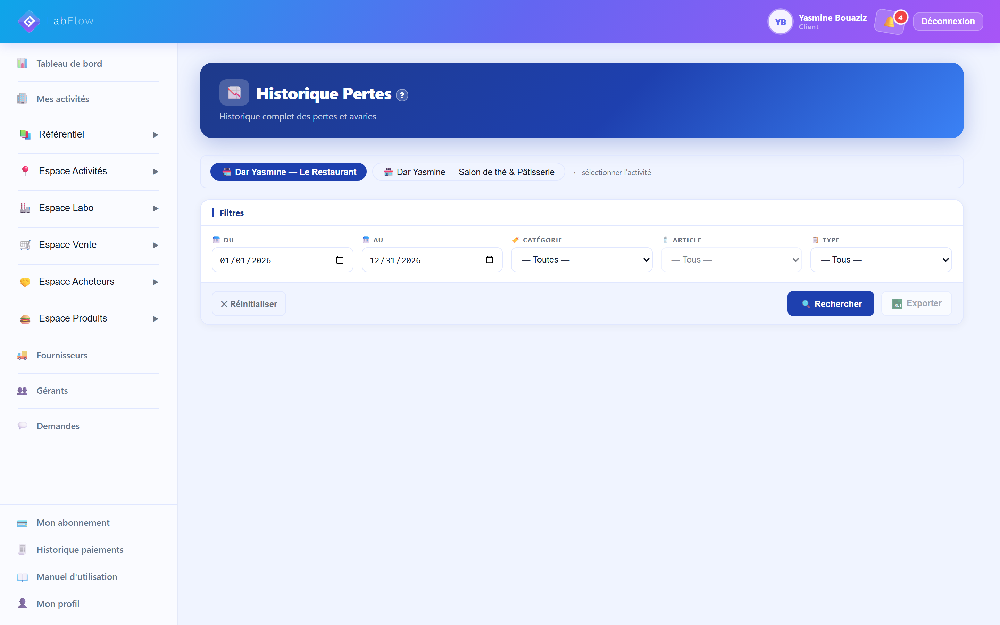
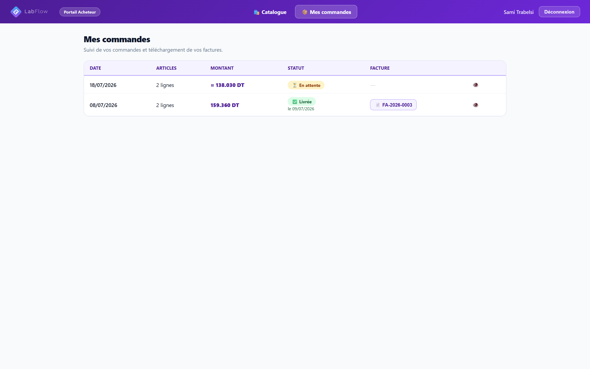
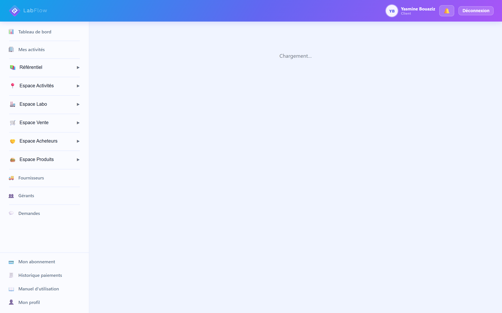

Stocks, coûts de revient, ventes et commandes pros : tout en dinars, tout en français, tout au même endroit. Vous voyez votre marge réelle chaque matin, sans calculette ni cahier.

Ce ne sont pas des cas d'école. C'est ce que nous racontent les patrons qu'on rencontre.
Vous achetez dix sacs, dix caisses, dix bidons. À l'inventaire, il en manque deux. Casse, gaspillage, oubli ? Personne ne sait, et surtout personne ne le chiffre. À la fin du mois, c'est votre marge qui a fondu avec.
Le beurre a augmenté, la viande et l'huile aussi. Vos prix de vente, eux, n'ont pas bougé depuis l'an dernier. Certains de vos best-sellers — un gâteau, un plat, un sandwich — vous font peut-être perdre de l'argent à chaque vente. Et vous ne le saurez qu'en le calculant.
Le café du coin appelle le soir, l'hôtel envoie un message le matin. Un bout de papier, un oubli, une livraison ratée. Et un client pro déçu, ça ne rappelle pas deux fois.
Le dimanche soir, calculette à la main, vous additionnez des colonnes. Deux heures plus tard, vous obtenez un chiffre… dont vous doutez déjà. Et il faudra recommencer le mois prochain.
Chaque sac, chaque caisse, chaque bidon entre dans LabFlow avec son prix, son fournisseur et sa référence de facture. Le stock de chaque point de vente — restaurant, boutique, café ou comptoir — est valorisé en dinars, jour après jour. Une avarie, de la casse ? Vous la notez, elle est chiffrée. À l'inventaire, fini le mystère : vous comparez ce qu'il devrait rester et ce qu'il reste vraiment.

Votre labo ou votre cuisine centrale a son propre stock. Vous lancez une production — quarante mille-feuilles, vingt kilos de plats cuisinés, une fournée de charcuterie : les ingrédients se déduisent tout seuls, y compris la sous-recette que vous avez produite hier. Le coût de revient se recalcule à chaque changement de prix d'achat. Et quand la marchandise part vers vos points de vente, le transfert est valorisé, facture de transfert à l'appui.
Ventes au comptoir, plateformes de livraison avec leurs commissions, charges fixes : tout entre dans le calcul. Le tableau de bord vous montre votre marge réelle, étage par étage, et votre food cost. Et pour vos clients professionnels, le portail de commande travaille pendant que vous dormez : chacun commande à ses tarifs, la facture fiscale sort toute seule.

Pas d'illustrations génériques : chaque bloc recevra une capture réelle du logiciel, annotée, issue du compte démo.

Votre journée en un coup d'œil : ventes, coûts, marge — en dinars, pas en pourcentages abstraits.
Le coût exact de chaque recette — du mille-feuille au plat du jour — recalculé à chaque hausse des prix, sous-recettes comprises.

Chaque avarie a un prix. Vous savez enfin combien vous coûte la poubelle.
Vous lancez la production, LabFlow déduit les ingrédients et chiffre ce que ça vous a coûté.

Vos clients pros commandent seuls, à leurs tarifs, même à 22 h. Vous êtes prévenu aussitôt.

Factures fiscales numérotées avec timbre fiscal, exports Excel avec votre logo. Votre comptable vous dira merci — téléchargez des exemples.
Restaurant, café, bar, pâtisserie, boulangerie, boucherie, traiteur, dépôt : si vous achetez de la marchandise, la transformez ou la revendez, LabFlow parle votre langue.
Chaque plat, chaque boisson a sa fiche et son coût. Les commissions des plateformes de livraison et vos charges fixes entrent dans le calcul : vous voyez la marge réelle de chaque canal, service après service.
Vos boutiques enregistrent leurs achats et leurs ventes, LabFlow calcule le reste : stock du jour en dinars, pertes chiffrées, marge par produit. Vous passez à la boutique, vous ouvrez le tableau de bord, vous savez.
Un buffet pour deux cents personnes ? Vos fiches techniques donnent le coût de revient exact, mis à jour aux derniers prix d'achat. Vous annoncez votre prix en connaissance de cause — et vous gardez votre marge.
Achats tracés au prix près, pertes et invendus chiffrés en dinars, inventaires rapides, seuils d'alerte avant la rupture. Votre marge se défend au comptoir, pas sur un cahier.
Le labo a son stock, chaque point de vente a le sien. Chaque production déduit les ingrédients, chaque transfert est valorisé avec sa facture. Plus de flou entre l'atelier et les caisses.
Cafés, hôtels, restaurants, revendeurs : chacun a ses tarifs négociés et son accès au portail. Ils commandent 24 h/24, vous recevez une notification, la facture fiscale sort automatiquement. Et le compte dépôt existe aussi sans point de vente, 100 % B2B.
Une vraie journée dans LabFlow : le stock qui entre avec son prix, la production qui déduit les ingrédients toute seule, la commande qui tombe depuis le portail acheteurs, et la marge qui s'affiche au tableau de bord. Pas de discours : de vrais écrans. Et si vous préférez une visite guidée en direct, un conseiller vous la fait par téléphone ou WhatsApp.
LabFlow se lance. Nous n'allons pas vous raconter que « 500 clients nous font confiance » — ce serait faux, et vous le sentiriez. À la place, jugez sur pièces : téléchargez des fichiers produits par le logiciel, tels que vos équipes les utiliseront (données anonymisées). L'étude de cas de notre client pilote est disponible sur demande, et les premiers comptes portent le badge early-adopter, avec des conditions particulières négociées au contrat.
Export Excel des approvisionnements du labo de démonstration, à la charte LabFlow.
Télécharger l'exemple →Facture fiscale d'acheteur pro du compte de démonstration, numérotée FA-2026-…, avec timbre fiscal.
Télécharger l'exemple →Export Excel des transferts labo → points de vente, valorisés ligne par ligne.
Télécharger l'exemple →Fichiers issus du compte de démonstration « Dar Yasmine » — données fictives, générées par LabFlow.
Trois packs, selon votre organisation. À l'ouverture, la mise en route est un service unique à partir de 500 DT (700 DT avec labo) : paramétrage complet et formation, vous recevez un compte prêt à travailler.
Composez votre configuration — l'estimation s'affiche en direct, en dinars.
Pas de compte à créer tout seul, pas de carte bancaire, pas de page vide. De la première prise de contact à votre premier jour de travail, une équipe s'occupe de tout.
Un formulaire de deux minutes : votre activité, vos coordonnées. Aucun engagement, aucun paiement.
Par téléphone ou WhatsApp, il écoute votre organisation — combien de points de vente, un labo ou pas, des clients professionnels ou pas — et vous remet un devis clair, en dinars.
Tout est écrit noir sur blanc : formules, tarifs, prestations. La signature se fait électroniquement, depuis votre téléphone. Pas d'imprimante, pas de déplacement.
Notre équipe paramètre tout : vos points de vente, votre labo, vos articles — importés d'un coup depuis votre fichier Excel si vous en avez un, avec un modèle fourni. Vous ne démarrez pas devant un écran vide.
Une formation pour vous et vos équipes, un manuel illustré de 57 fiches intégré à l'application, et un assistant qui répond à vos questions à partir de vos propres chiffres. Dès le premier jour, vous travaillez — et votre conseiller reste joignable sur WhatsApp.
Oui, c'est même pensé pour vous. L'application est simple et entièrement en français, pensée pour le comptoir et le labo, pas pour les informaticiens. Surtout, vous n'êtes pas lâché seul : nous paramétrons votre compte, nous formons votre équipe, un manuel illustré de 57 fiches est intégré à l'application, et un assistant répond à vos questions en français, dans l'application ou sur Messenger. Et s'il faut un humain, votre conseiller est sur WhatsApp.
Non, et c'est voulu. Un compte vide ne vous apprendrait rien : la valeur de LabFlow, c'est vos recettes, vos prix, vos points de vente déjà paramétrés. Pour vous faire une idée avant de vous engager : la démo de 90 secondes, les fichiers exemples à télécharger, et un échange avec un conseiller qui répond à vos questions concrètes — sans engagement.
Les tarifs de référence sont publics : un point de vente seul dès 150 DT/mois, un labo avec deux points de vente autour de 440 DT/mois, un dépôt 100 % B2B dès 210 DT/mois. S'y ajoute la mise en route unique (à partir de 500 DT, 700 DT avec labo) qui couvre le paramétrage et la formation. Votre prix exact est fixé au devis, puis au contrat : c'est ce document qui fait foi. Pas de frais cachés.
Par mensualité en dinars, avec une facture PDF chaque mois. Aucun paiement par carte en ligne, aucune surprise : les modalités sont fixées noir sur blanc dans votre contrat, signé électroniquement, avant tout paiement.
C'est le cœur du logiciel. Chaque site a son stock et ses chiffres, les transferts labo vers points de vente sont valorisés avec facture de transfert, et le coût de revient est calculé par site. Vous pouvez déléguer : un gérant supplémentaire (80 DT/mois) ne voit que le périmètre que vous lui confiez, sur simple invitation par email. Et avec un labo, tous vos points de vente bénéficient de −30 % sur leur abonnement.
Non, rien. Le portail de commande s'ouvre dans le navigateur de leur téléphone ou de leur ordinateur. Chaque acheteur voit votre catalogue à ses tarifs négociés, commande 24 h/24 et suit sa commande en 4 étapes. Vous êtes notifié immédiatement, et la facture fiscale se génère automatiquement, timbre fiscal compris.
Vos données restent vos données. Tous les historiques — stocks, achats, pertes, ventes, productions, commandes — sont filtrables et exportables en Excel quand vous voulez, avec votre logo sur chaque fichier. Vos factures sortent en PDF.
Demandez un accès aujourd'hui : un conseiller vous recontacte sous 24 h pour comprendre votre organisation et vous proposer un devis en dinars. Vous décidez ensuite, tranquillement — rien ne se passe sans votre signature.
Demander un accès